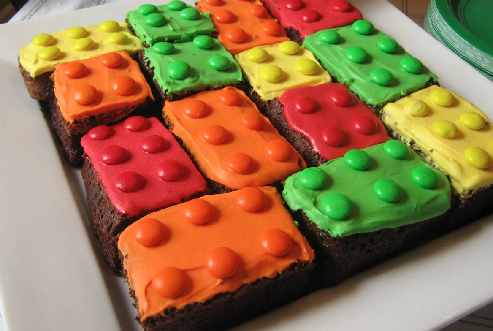

Lego Brownies

Description
Don't these Lego Brownies look delicious?
And the best part is: they are incredibly simple to make!
First, you either make or buy a batch of brownies.
Then you make the icing out of powdered sugar and water,
spread it out over the brownies, and finish it off with m&ms.
Voilà: the perfect dessert for a themed children's party!
Ingredients
- Brownies, homemade or store-bought
- 200g of powdered sugar
- Food coloring in various m&m's colors
- m&m's
Steps
- Buy or make your favorite brownies. If homemade, let them cool before moving on to the next step!
- Make the icing by dumping the powdered sugar into a bowl, and adding little bits of water while stirring until you get a thick, easily spreadable paste
- Divide the icing into 3 or 4 batches and put them in separate, smaller bolws
- Add a few drops of food coloring to each batch of icing. Choose a different color for each one. Make sure the colors match the m&m's you have!
- Spread the icing evenly over the top of your brownies
- Add m&m's, logo down, as shown in the picture
Home